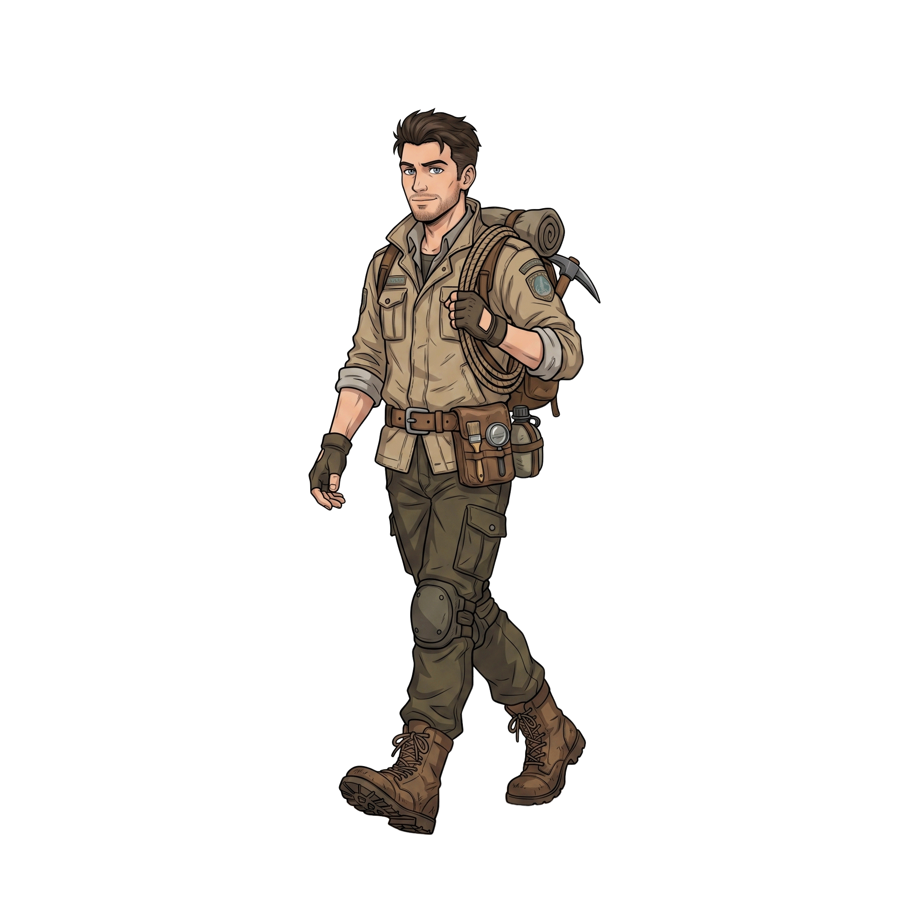
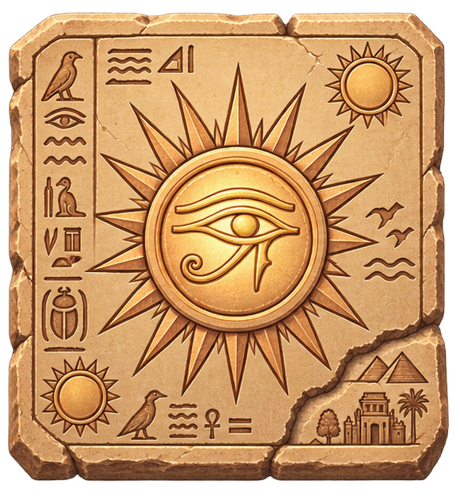
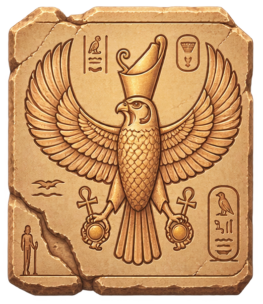
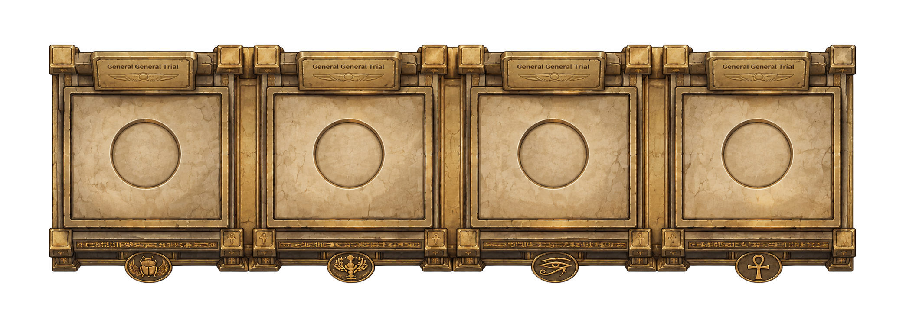
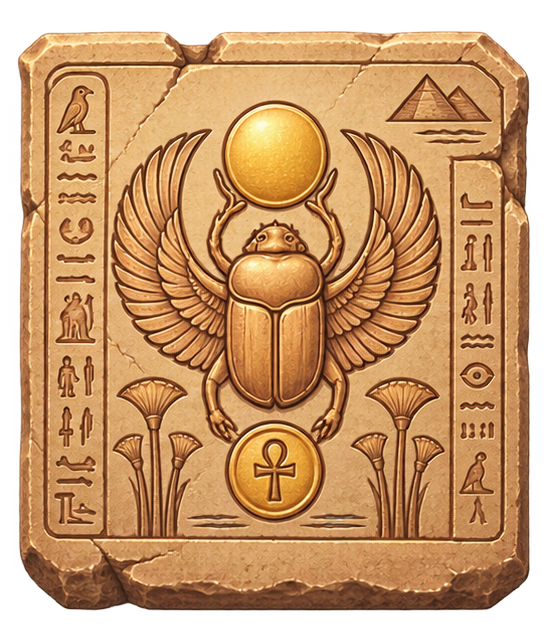
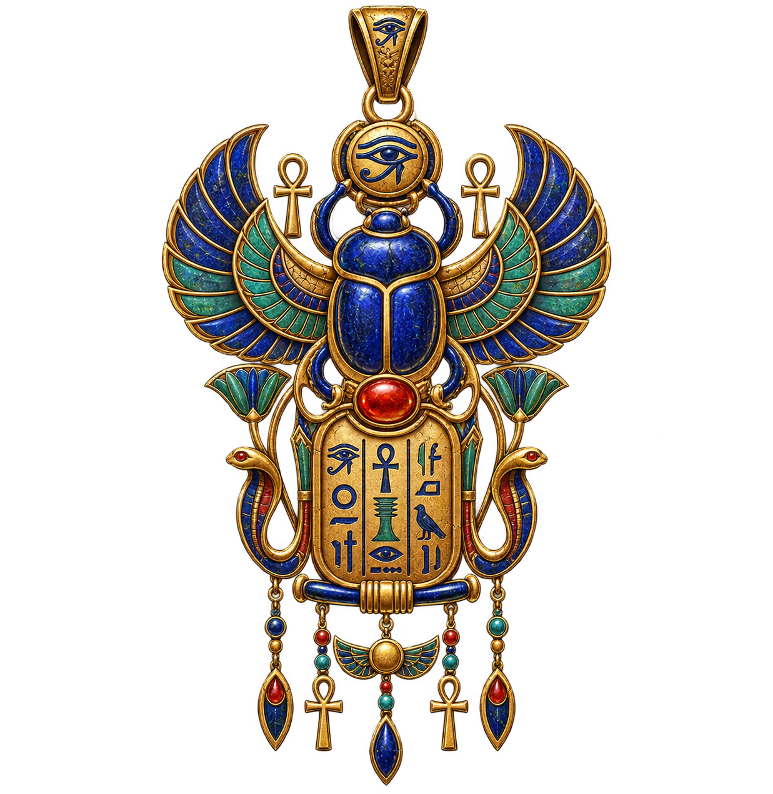

太陽之心：法老王的封印
正在確認存檔……
遊戲說明
探索三座古墓場景，調查壁畫與遺物，解開法老留下的試煉。
- A／D 或方向鍵
- 移動
- E
- 調查與互動
- B
- 開啟背包
- ESC
- 跳過開場或關閉視窗
遊戲會在進入各場景時自動保存紀錄。
法老王陵墓・探勘許可
登入後可保留你的探勘紀錄。
尚未建立探勘紀錄？
無需建立帳號即可遊玩，部分紀錄可能不會永久保存。
正在載入神殿與探險者……

收集的古代遺物會存放於此
選取道具檢視詳情
點擊上方道具格子讀取法老的秘密...
「太陽升起，聖鷹飛翔，生命甦醒，河流滋養大地。」




「心若重於真理，靈魂將被黑暗吞噬。」
先選擇攜帶物，再點擊左盤或右盤；點擊盤中物品可取回。
天秤底座的暗格中，靜靜躺著守墓祭司留下的護符。

【祭司護符】或許能保護持有者穿越法老墓室的危險。
你要將它帶離這座陵墓嗎？
終章
古墓的封印已經落下
古墓的封印已經完全閉合。
目前沒有可以返回的紀錄。